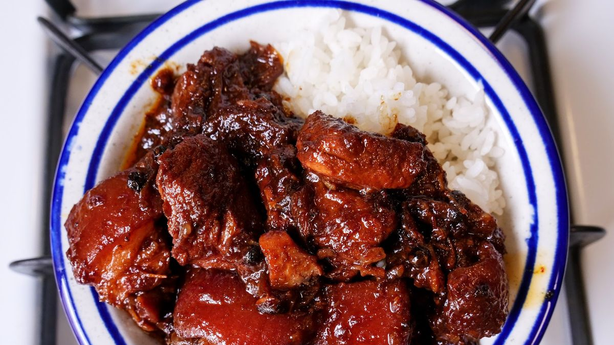

Adobo Recipe

The Adobo or Filipino braised pork is an old filipino dish that originates back during the spanish rule.
Ingredients
- 1kg Pork or Meat of choice
- dark soy sauce
- brown sugar
- pepper
- pepper leaf
- oil
- garlic
- star anise
- black beans (optional)
Directions
- boil the meat and let it simmer
- Once the water evaporates add oil and garlic and let it cook for a bit
- Once the garlic is golden brown add the wet ingredients along with the spices
- stir and let it simmer again to thicken the sauce
- Once the sauce is thick plate it and done!